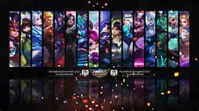

What are Mages?
Mages are defined by dealing either burst or poke Magic damage to enemies. They are almost all the time easy to kill due to their usual lack of mobility. They are vital parts of team fights as they deal great amounts of damage to the enemy team. Before we go in too much to their purpose in-game, let us first focus on defining these mages.
A magician (abbreviated as mage) is a hero with a longer range, ability-based area of effect damage, and crowd control that they may utilize to strike from a distance. Mages primarily focus on magic skills that deals magic damage, usually burst damage, and as a consequence, they spend a lot of gold on equipment that allows them to do more damage and have shorter skill cooldowns.
Though mages typically focus on killing prime targets in combat, they can also use their innate crowd control and utility to manipulate opponents, protecting their team from them or setting them up for a takedown, and in the right circumstances, can damage and control multiple enemies at the same time. Regardless of their might, mages are fundamentally frail and succumb fast to direct attacks.
Just like other roles, mages may be classified based on the purity of their Mage role. Some are pure mages while some have their Mage role as their primary or secondary role.
Pure mages include Eudora, Cecilion, Vexana, Xavier, Valentina, Yve, Luo Yi, Lylia, Harith, Lunox, Vale, Chang'e, Valir, Pharsa, Zsask, Odette, Aurora, Cyclops, Kagura, and Gord.
Mage with the primary Mage role include Alice, Nana, Harley, Kadita, and Esmeralda.
Lastly, mages with the secondary Mage role include Bane, Selena, Kimmy, Faramis, and Julian.
Now, let us discuss what these mages do during in-game matches.
What do Mages do?

Mages are heroes with Magic damage that are vital in team fights due to their area of effect skills that deal damage to multiple enemies at the same time. Because of this, it is necessary for them to be able to join team fights as soon as they can. Thus, mages are almost all the time positioned in the mid lane. Even if this is so, these mages can still go to any other lane to supplement for the non-availability of a teammate that goes to the other lanes. Some mages can even act as the team's roamer due to their skill set.
Starting off, let us properly explain why mages usually go to the mid lane. First of all, the mid lane, as implied by the term, is the lane positioned at the middle of the map. Mages usually go here because they are the ones that are usually needed in team fights. They are more necessary than the fighters and marksmen when it comes to fighting in team fights, specially in the early game where the mages are mostly dominating. Mages can easily go and gank other lanes if they are laning on the mid lane. These ganks are essential for the team since ganking other lanes will allow the teammate on that lane to dominate their lane opponent. The second thing is that mages have a hard time clearing minion waves. Unlike fighters and marksmen, the basic attack of mages barely deal damage. This means that they have to use their skills to deal damage to minions. The problem is that they do not have enough mana in the early game to actually spam their skills on minions. As a lifesaver for mages, the early minion waves in the Mid lane are not assisted by the cannon minion which is relatively more difficult to kill than the normal ranged and melee minions. This allows the mages in the mid lane to clear the minion wave faster and assist either the other lanes or the jungler quicker.
Besides being on the mid lane, mages may also play the roamer role. However, this role is not suited to every mage. This is because mages are squishy and easily killed. They also need the Magic items to deal damage, which means that they do not have enough slots to buy enough durability and defensive items. Some mages suited to be a roamer are Faramis, Julian, Valir, Lylia, Luo Yi, Valentina, Kadita, Alice, Nana, Esmeralda, and Selena. These assassins are able to act as a roamer either because they have the proper crowd control skill, enough durability, or they have a skill that will allow them to support their allies.
Though mages have a hard time in the side lanes, they can still manage the minion waves by using the turrets on their advantage. Since they are mostly long-ranged, they are able to poke damage on the enemy sidelaner which will be the key to dominating the lane.
Even though mages may go to all other lanes and even play as the roamer, it is still very recommended for them to lane on the mid lane instead of any other lanes. Mages are necessary for team fights are a must-have if victory is what the team seeks.
Some Special Abilities of Certain Mages
Team Teleportation
Luo Yi's 'Diversion' (Ultimate skill)
Active: Luo Yi creates a Teleport Circle around herself and marks target location (within 20 units) as its destination. After 3 seconds delay, allied heroes (including herself) within the Circle will be teleported to the location.
Passive: Luo Yi’s Cooldown Reduction is increased by 6%–10%.
Global Beam!!
Xavier's 'Dawning Light' (Ultimate skill)
Xavier unleashes a beam of Mystic magic that deals 700-1100 (+150% Total Magic Power) Magic Damage to all enemies in a line on the map.
Xavier also directly enters Transcendence Stage III.
Copy the Hero (and the Skin!!)
Valentina's 'I Am You' (Ultimate skill)
Valentina siphons the power of a designated enemy hero and slows them by 70% for 0.5 seconds. The siphoned power allows Valentina to cast the enemy's Ultimate within the next 20 seconds. After casting the enemy's Ultimate, Valentina will turn into the enemy hero's form and inherit their Basic Attack type (regular skills remain unchanged, unless the enemy's Ultimate has Morph effect). Valentina can turn back to her original form early.
This skill has no effect on enemy Valentina. The stolen Ultimate's level is determined by Valentina's own Ultimate. If the enemy hero is a Physical Damage hero, Valentina will gain (+100% Total Magic Power) extra Physical Attack within the duration.
Second Chance in Life
Nana's 'Molina's Gift' (Passive skill)
Blessed by Molina, Nanacan transform upon taking fatal damage, removing all control effects on her, becoming immune to all damage, and gaining 70% extra Movement Speed for 2 seconds. She also recovers 10% Max HP over the duration.
Nana can only transform once every 120 seconds and cannot cast skills in transformed form.
Revive Everyone!!!
Faramis' 'Cult Altar' (Ultimate Skill)
Faramis summons an altar that lasts for 10 seconds. Allied heroes who are eliminated within this altar will be resurrected with 80% / 90% / 100% HP and 100% Attack for 10 seconds.
Though there are more abilities of Mage heroes worthy of being classified as unique and special, I am unable to cover them all in here. Hopefully, I would have some spare time in the future which would let me finish this work. Regardless, that is all about the mages!!